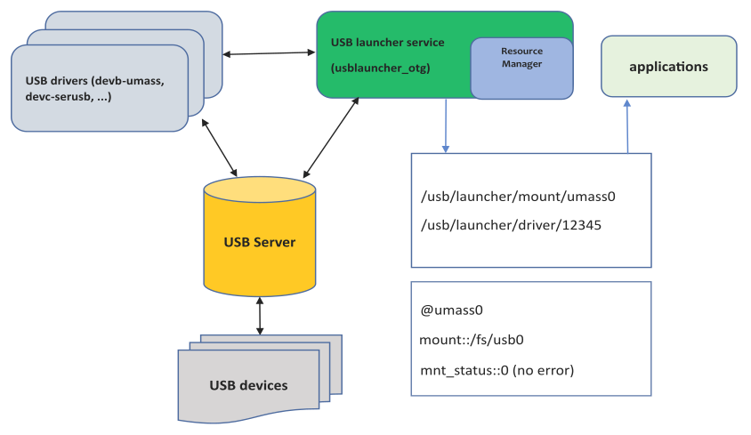

The USB launcher service (usblauncher_otg) processes USB device
attachments and detachments, launches drivers for communicating with devices, and publishes
device information through RMPS. The service can also force a re-enumeration of a device, by
resetting it or by requesting it to disconnect and change its personality.
The USB launcher service depends on the following system services:
- io-usb-otg
-
The USB server, io-usb-otg, manages the USB bus and USB
protocols through hardware controller drivers. The server monitors the bus
and notifies the launcher service of device attachments and detachments, and
supports USB host mode and USB device mode.
- Drivers for USB host mode
- When the
server is acting as a USB host, the launcher service can start drivers to
communicate with different types of devices. The simplest example is when a
user plugs in a mass-storage device, in which case the service launches a
devb-umass or devb-ustor driver
to communicate with it; if a device has multiple partitions, one such driver
manages all of the device's filesystems. Other drivers that may be used in
host mode include mm-ipod, io-sock
with a USB Ethernet driver, devc-serusb, and others.
The launcher service doesn't
support any On-The-Go (OTG) communication protocols designed to detect device
attachments (ADP), manage power on a USB link (SRP), or negotiate the roles of two
devices sharing a USB link (HNP). Instead, the service offers software emulation of OTG
by allowing you to configure it to launch USB host mode drivers for the use cases
outlined above and USB device mode drivers for devices for which end users want to
project their display onto the target's HMI.
Benefits of the USB launcher service
The
usblauncher_otg multipurpose service provides these benefits:
- Drivers can be started immediately
- Because the service launches the USB drivers, it knows immediately
whether the target system has a suitable driver for a newly attached
device. The service publishes the number of drivers that it will start
for the device to the RMPS device information object; this lets
applications subscribed to this object know right away whether the
device is supported.
- Automatic filesystem mounting
- The service can mount the filesystems of USB devices based on the mount
rules stated in a file (by default,
/etc/usblauncher/rules.mnt). It can also
publish mount operation statuses to inform applications whether
individual device filesystems were successfully mounted.
- Support for accessory mode
- Many smartphones now come with software that allows them to use another
system as an accessory, by projecting their UI onto that system's
display; end-users can then use the accessory to interact with
smartphone apps. For instance, if you're building a vehicular
infotainment system, you might want to let vehicle occupants access
smartphone features through the infotainment system's display.
Specifically, the USB launcher service can:
- Accept a command from a client application to ask an Android
device to enable its Android Open Accessory (AOA) interface, so
users can play media and access smartphone features from the
target.
- Check whether an Apple device supports the iPod Accessory
Protocol version 2 (iAP2) and if so, request that the device
switch to USB host mode, then launch a device mode driver on the
target system; this setup supports CarPlay.
Note:
In this release, the USB launcher service can run USB device mode drivers only to
support Apple CarPlay, in which the external device must act in the USB host role
and the target system must act in the USB device
role.
To use the associated launcher service features, you must install the Apple module,
which contains the usblauncherotg-Apple.so plugin that handles
this role-swapping, and load this module in the usblauncher_otg
command line. To talk to any Apple devices,
you must also
install the Apple Device Support package for the Multimedia for QNX SDP.
Architecture
Figure 1. Basic architecture of USB launcher service

The USB launcher service relies on the USB server to learn about changes in device
states, as illustrated in the figure above (here, the arrows show information flow).
When USB devices are attached or detached, they trigger hardware interrupts that the
running server detects. When the server learns that a device has been attached, it
enumerates the new device and notifies the launcher service.
The launcher service queries the server to retrieve the descriptors (properties) of
newly attached devices and compares these descriptors against the various USB
matching rules found in its configuration file. When it finds a match, the service
performs the specified follow-up actions. Often, this involves launching drivers and
publishing device, driver, and mountpoint information through RMPS.
To mount filesystems, the launcher service sends mount requests to the drivers that
manage the USB device paths. The mountpoints requested by the service are based on
the rules in the specified mount-rules file (for details, see the section on mounting filesystems).
Subscribed applications receive updates through RMPS when device information changes,
so they can learn when devices are reconfigured or removed.